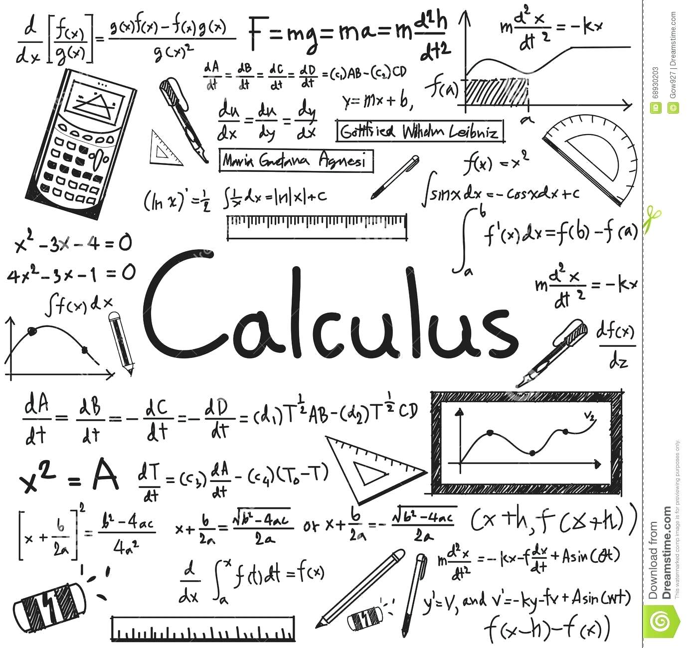

B.Sc. Mathematics is an undergraduate academic degree awarded to those who successfully complete a program in mathematics and related disciplines, such as computer science or statistics. Minimum Eligibility for which is 10+2 from a recognized Board.
The average course fee in India ranges between INR 3,000 - 1,44,000 for the total duration.
B.Sc. Mathematics Syllabus focuses primarily on developing mathematical skills in algebra, calculus and data analysis. A Higher Secondary degree or equivalent is needed to pursue B.Sc. Maths. Upon graduating in this stream, one can pursue courses such as
 Listed below are some of the major highlights of the course
| Course Level | Graduate |
| Duration | 3 years |
| Examination Type | Semester System |
| Eligibility | 10+2 from a recognized Board |
| Admission Process | Direct admission to colleges. However, some colleges may conduct entrance tests. |
| Course Fee | INR 3,000 - 1,44,000 |
| Average Starting Salary | INR 3 - 5 lacs T |
| op Recruiting Fields/Areas | Research, Academia, Technical institutes, Software Development Companies, Banks, Political, Military or Intelligence Bodies etc. |
B.sc. Mathematics is the study of quantity, structure, space, and change. A Bachelor of Science degree in Mathematics is a culmination of in-depth knowledge of geometry, trigonometry, calculus and other theories. It also explores related topics like Computer Science and Statistics. This degree course helps students in building a good foundation base for pursuing higher studies.
B.Sc. Mathematics graduates can follow teaching profession by teaching in schools or opening their own coaching classes. B.Sc maths degree holders are also required in Banking and Business services, Government Jobs, Investment and Insurance among many other employment areas.
The minimum eligibility criterion needed to be met for pursuing B.Sc. in Mathematics is a 10+2 or equivalent qualification in Science or Commerce stream with a minimum score of 50% in Mathematics from a recognized educational Board. Also, some reputed colleges or institutes might conduct entrance examinations for offering admission to the course.
For admission to the course, most institutes and universities in the country follow a merit-based admission process. Marks scored by applicants at the Higher Secondary level and/ or relevant entrance test are taken into consideration. Seats are accordingly allotted to deserving candidates.
A semester- wise breakup of the course’s syllabus is tabulated below
| Semester I | Semester II |
| Calculus | Analytical Solid Geometry |
| Probability & Statistics | Differential Equations |
| Semester III | Semester IV |
| Real Analysis | Mechanics |
| Abstract Algebra | Linear Algebra |
| Semester V | Semester VI |
| Discrete Mathematics | Complex Analysis |
| Linear Programming & Its Applications | Numerical Analysis |
Degree holders in Mathematics are respected for their excellent quantitative and problem- solving abilities and can get hold of a wide range of rewarding positions in both public and private sectors. Successful graduates of the course are employed in banking, finance, insurance, and risk-management, besides universities and scientific institutes.